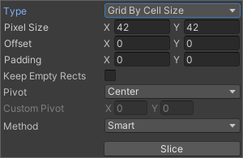
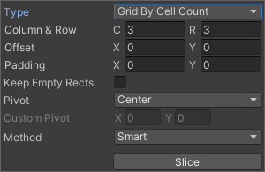

Select the Slice tool and set its Type to Automatic to have Unity automatically slice a texture into multiple individual sprites by generating boundaries based on the surrounding transparency of each potential spriteA 2D graphic objects. If you are used to working in 3D, Sprites are essentially just standard textures but there are special techniques for combining and managing sprite textures for efficiency and convenience during development. More info
See in Glossary. For example, you can use Automatic Slicing to isolate regularly spaced graphical images in a texture, such as individual TilesA simple class that allows a sprite to be rendered on a Tilemap. More info
See in Glossary in a tile sheet.
After selecting the Slice tool from the Sprite Editor toolbarA row of buttons and basic controls at the top of the Unity Editor that allows you to interact with the Editor in various ways (e.g. scaling, translation). More info
See in Glossary and setting its Type to Automatic, the following editor panel appears:
In this panel, you can set the default pivot for each sliced sprite with the Pivot and Custom Pivot options. If there are existing selections in the editor window before applying the Automatic slicing, select from the following options in the Method menu to choose how Unity handles the existing selections:
| Method | Function |
|---|---|
| Delete Existing | Deletes all SpriteRects in the Texture and adds the newly sliced SpriteRects. |
| Smart | If a newly sliced SpriteRect overlaps with one or more existing SpriteRects, the best overlapping original SpriteRect will have its position and size updated to the newly sliced SpriteRect. This newly sliced SpriteRect will then be discarded. |
| Safe | Maintains all original SpriteRects. If a newly sliced SpriteRect overlaps with an existing SpriteRect, it will be discarded. |
Grid by Cell Size or Grid by Cell Count options are also available for the slicing type. This is very useful when the sprites have already been laid out in a regular pattern during creation:

The PixelThe smallest unit in a computer image. Pixel size depends on your screen resolution. Pixel lighting is calculated at every screen pixel. More info
See in Glossary Size values determine the height and width of the tiles in pixels. If you chose grid by cell count, Column & Row determines the number of columns and rows used for slicing. You can also use the Offset values to shift the grid position from the upper left of the image and the Padding values to inset the SpriteRects slightly from the grid. The Keep Empty Rects option lets you keep SpriteRects that don’t have any pixels within them. This is useful for organising sprites created from the texture based on their position in the texture. The Pivot can be set with one of nine preset locations or a Custom Pivot location can be set.
The Isometric Grid option attempts to slice the sprite sheet which has its sprites laid out in alternating rows of half-height diamonds. When sliced, the resulting SpriteRects will have custom outlines and physics shapes corresponding to the half-height diamonds.
The Is Alternate option determines if the isometric diamonds are staggered across alternate rows. If set, the top most row is assumed to have its first diamond starting half a pixel size from the left side. If not, it assumes that the first diamond starts from the left side directly.
When slicing with the Grid options, previews of the SpriteRects are shown on the texture to help guide the slicing. Adjusting the slicing settings will update the previews accordingly. The preview SpriteRects shown may not be generated after slicing depending on the method used for handling existing SpriteRects or the pixel contents of the preview SpriteRects.
Note that you can manually edit any SpriteRect generated by any of these Automatic Slicing methods to fine-tune the shape of the SpriteRects.